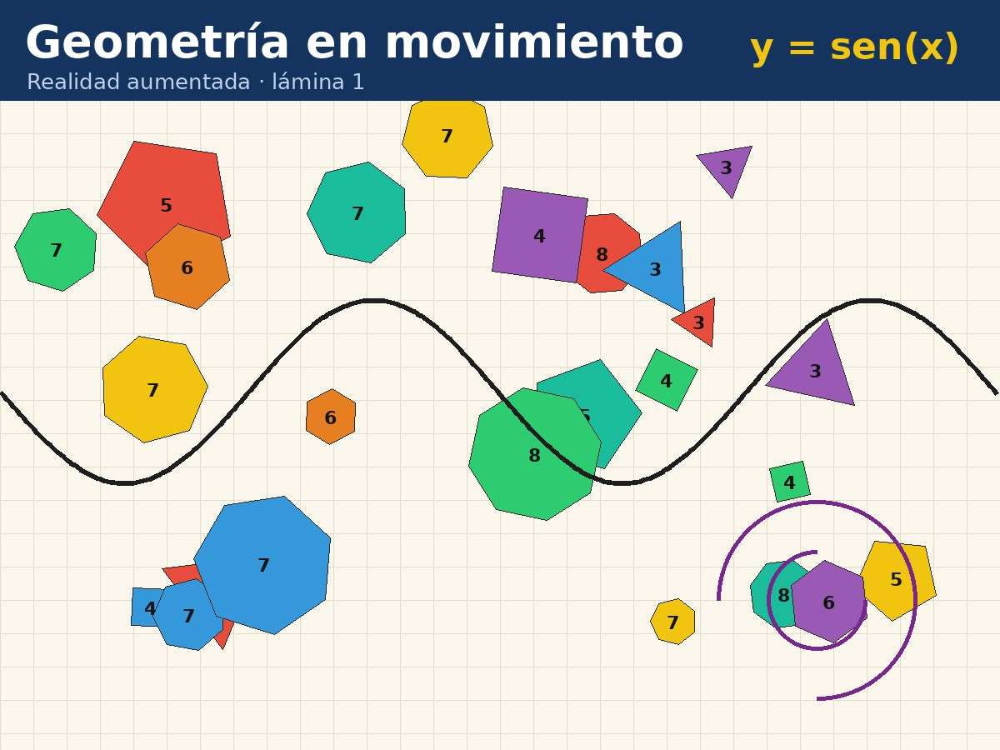

RA · Aula
RA · Aula
Realidad aumentada para el aula
Apuntás la cámara a una lámina y aparece un video, una imagen, un modelo 3D o un audio encima. Lo puede usar cualquier docente o estudiante, desde el navegador, sin instalar nada y sin cuentas.

Cómo armo una, paso a paso
Si es tu primera vez, seguí estos siete pasos y en veinte minutos tenés la tuya andando. No hace falta saber programar.
Antes de arrancar, juntá dos cosas
La lámina. Es la imagen que después vas a imprimir o mostrar en una pantalla, y a la que le vas a apuntar con la cámara. Puede ser un afiche, una foto, un dibujo tuyo, la tapa de un libro.
Lo que aparece encima. Un video, una foto, un dibujo, un modelo 3D o un audio. También podés armar un rompecabezas o una actividad de ordenar, y para esas no necesitás nada más que la lámina.
-
Entrá a Crear y cargá la lámina
Tocá Elegí la imagen de la lámina y buscala en tu compu. Apenas la cargás, mirá el cartelito que aparece al lado del número: si dice que se reconoce bien, seguí tranquila. Si sale en rojo, esa imagen tiene poco dibujo y a la cámara le va a costar encontrarla: cambiala por una con más detalle y más contraste.
-
Elegí qué querés que aparezca
Con Elegir archivo ponés el video, la foto, el modelo 3D o el audio. Si elegís una foto, abajo te pregunta si la mostramos tal cual o si la partimos en piezas para armar un rompecabezas. Si lo que querés es una actividad de ordenar, usá los botones Ordenar palabras u Ordenar imágenes en vez de elegir archivo.
-
Acomodalo mirando la vista previa
Con los controles de la derecha cambiás el tamaño, lo movés, lo girás y le suavizás los bordes. Todo lo que tocás se ve al instante sobre la lámina, así que no hay que adivinar: lo que ves ahí es lo que vas a ver después con la cámara.
-
Si querés más de una lámina, agregala
Con Agregar otra lámina sumás todas las que quieras en la misma experiencia. Una sola recomendación: que sean bien distintas entre sí. Si usás varias muy parecidas, la cámara se confunde y te muestra la que no es.
-
Generá la experiencia
Tocá Generar experiencia. La computadora analiza cada lámina para poder reconocerla después; tarda unos segundos por lámina. No cierres la pestaña mientras trabaja.
-
Probala con la cámara
Tocá Probar con la cámara, aceptá el permiso y apuntá a la lámina. La podés tener impresa o mostrarla en otra pantalla, lo mismo da. Si algo no te gusta, salí, cambialo y generá de nuevo.
-
Descargala y compartila
Tocá Descargar paquete y te baja un archivo .zip: esa es tu experiencia entera. Se la pasás a quien quieras por mail, Drive, WhatsApp o pendrive, y esa persona la abre desde Ver. Si además la publicás, el creador te arma un QR y una hoja para imprimir con la lámina y el código al lado.
Para que salga bien
- Láminas con mucho dibujo, bordes y colores. Las imágenes lisas o muy parejas no se reconocen.
- Evitá las imágenes simétricas: la cámara necesita distinguir qué lado es cuál.
- Si la imprimís, mejor en papel mate: el brillo molesta.
- Videos cortos y livianos, en MP4. Si pesa más de 30 MB, conviene achicarlo.
- Modelos 3D en formato .glb, que es un solo archivo.
💻 Usarlo sin internet
Descargá el sistema completo, descomprimilo en la notebook y abrí index.html con doble clic (Chrome, Edge o Firefox). No se instala nada.
En el celular esta carpeta no sirve (Android no deja que una página local use sus archivos ni la cámara). Ahí el camino es el de al lado: entrar una vez al sitio y queda guardado.
📲 Abrilo en el celular
Proyectá este código en clase para que lo escaneen. Con entrar una vez, el celular guarda el sistema y después funciona sin conexión. Si lo agregan a la pantalla de inicio, queda como una aplicación.
🧪 Probalo ya
Abrí o imprimí una de estas láminas, entrá al visor, elegí Geometría en movimiento en la galería y apuntá la cámara.